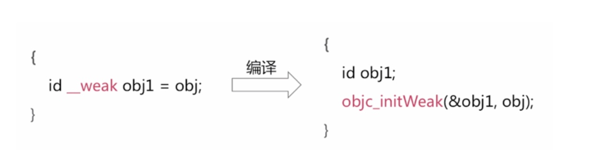
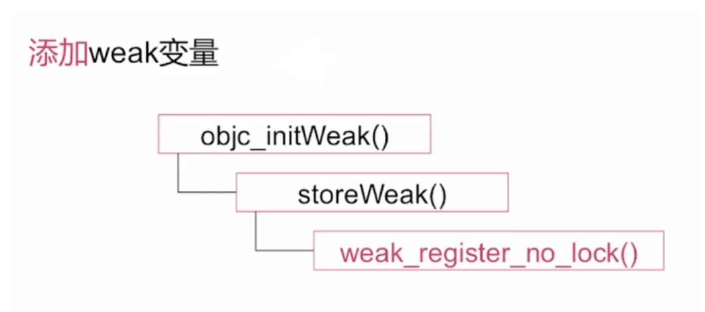
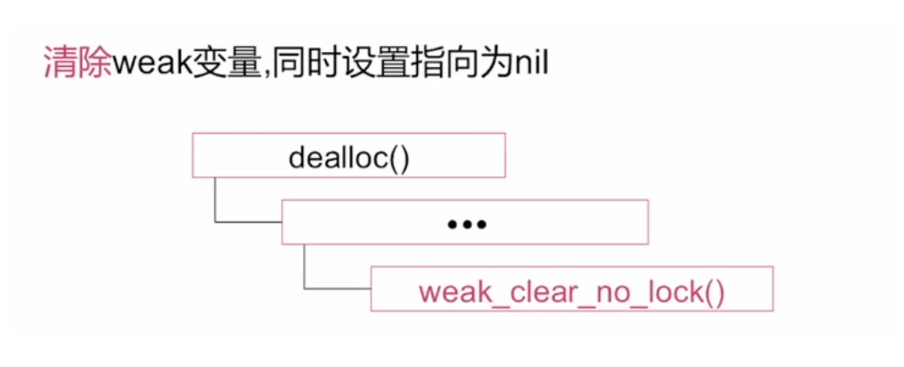

思考：一个 weak 变量是怎么样被添加到弱引用表当中的？

- 在这个代码块当中是使用了一个 杠杠weak 关键字修饰的 obj1 这个变量来指向一个通过 alloc 分配的一个对象 obj，此时就产生了一个 杠杠weak 弱引用指针
- 这个代码块经过编译之后会变成后者的代码块，这里面实际是调用了 objc_initWeak 函数，传递的两个参数，第一个参数是 obj1 这个弱引用变量的地址，第二个是传递了被修饰的对象
在这个过程中都发生了什么？来看一下 objc_initWeak 的调用栈：

首先 objc_initWeak 这个函数会调用一个叫 storeWeak 的函数，然后会调用 weak-register-no-lock 函数，通过名称可以得知，这个 weak 指针被添加到弱引用表的具体实现就在这个函数当中（register注册）
代码的讲解：
通过原对象的指针地址进行哈希算法的计算获取到这个对象在弱引用表当中一个对应索引位置，然后通过所查找的这个索引位置返回给调用放相应的这个对象的所对应的弱引用的数组
获取到的 entry 可以理解为是一个数组，实际上是一个比数组复杂一点的结构，如果获取到了这个结构，就把新产生的弱引用指针添加到数组当中，如果没有获取到被修饰对象的弱引用数组的话，就需要重新创建一个弱引用数组，初始化全是 nil，创建的这个数组的个数大小是为4的限制，之后会把弱引用的数组插入弱引用表的对应位置当中
添加 weak 变量总结：
- 一个被声明为 - -weak 的对象指针经过编译器的编译后，会调用相应的 objc_initWeak 方法，然后经过一系列的函数调用栈，最终在weak-register-no-lock 函数当中进行弱引用变量的添加，具体添加的位置是通过一个哈希算法来进行位置查找的
- 如果说我们查找对应位置当中已经有了当前对象所对应的一个弱引用数组，就把新的弱引用变量添加到数组当中
- 如果没有的话，会重新创建一个弱引用数组，然后把第 0 个位置添加上最新的 weak 指针后面的都初始化为 0 或者为 nil
思考：当一个对象被释放后者废弃之后 weak 变量是怎么处理的？

在调 dealloc 方法之后，进过一系列的调用，在他内部当中最终会调用 weak_chear_no_lock 方法
源码分析系统是如何实现把一个废弃的对象的弱引用指针自动置为 nil 的
总结：当一个对象被 dealloc 之后，在 dealloc 的内部实现当中会去调用它弱引用清楚的相关函数，然后在这个函数的内部实现当中会根据当前对象的指针查找弱引用表，把当前对象相对应的弱引用都拿出来，是一个数组，然后遍历这个数组当中所有的弱引用指针，分别置为 nil .